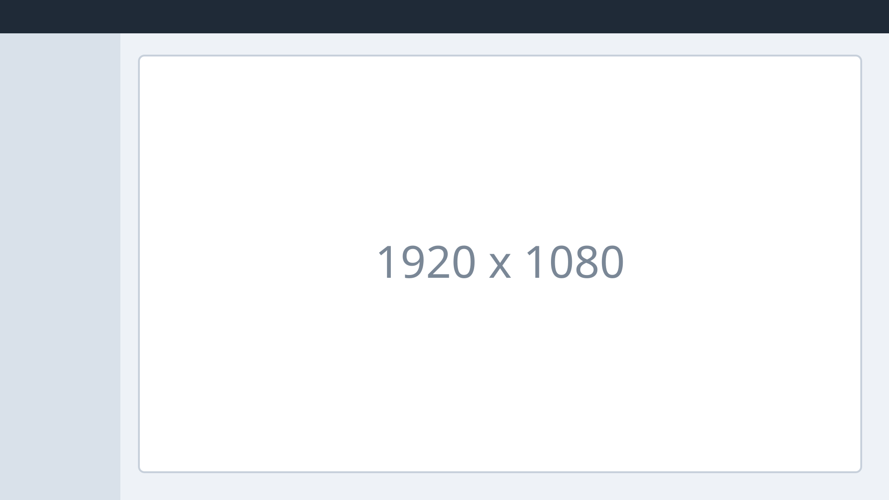
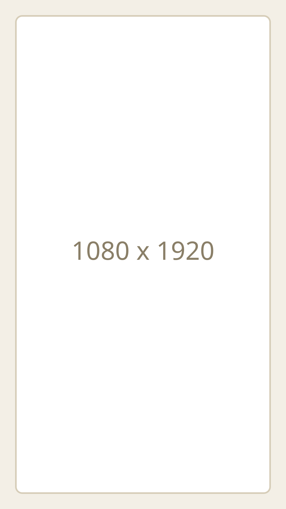

1 / 6
EWS 조기경보
재난 예·경보 통합 관제
2026-11-18
2 / 6
1.
경보 흐름
수집
센서·영상
판단
임계값
지속 시간
발령
방송·문자·전광판
확인
통화 결과 정산
3 / 6
1.
숫자로 보는 EWS
39 개
관제 화면
1,240 대
연계 단말
12 종
센서 규격
3 초
발령까지
24 시간
무중단 감시
4 / 6
종합 관제
1.
상황판

5 / 6
1.
세로 그림

6 / 6
1.
일반 장
요점 하나
요점 둘
▤
▦
‹
1
/ 6
›
⛶
running…